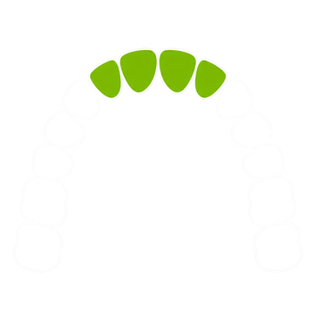

처방을 설명하고 교정을 설계해보세요
—
계획
계획을 만들지 못했습니다
지난 계획 개
검토 메모
케이스
샘플 케이스
샘플은 공개 데이터셋 Poseidon3D(Kubik & Spanel 2024, CC-BY-4.0)
환자 목록
케이스상태대표 계획위반계획처방
치아를 누르면 번호가 대화에 들어갑니다
계획을 준비하는 중…
충돌
장당 이동 한계 초과
고정
발치
IPR mm
치료 전 (겹쳐 보기)
선택한 치아 (눌러서 대화에 넘기기)